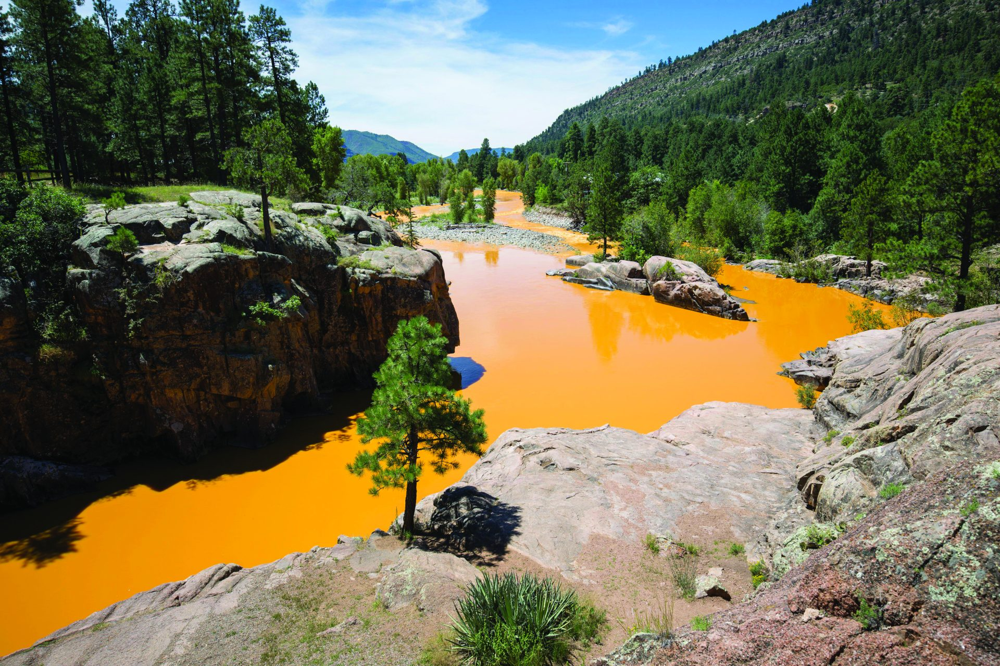
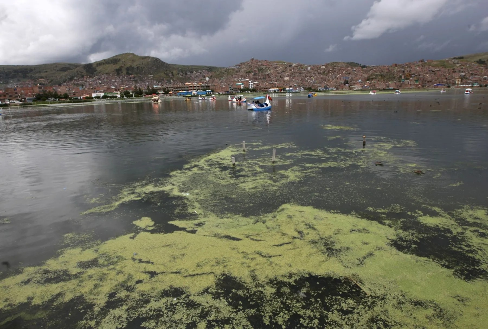
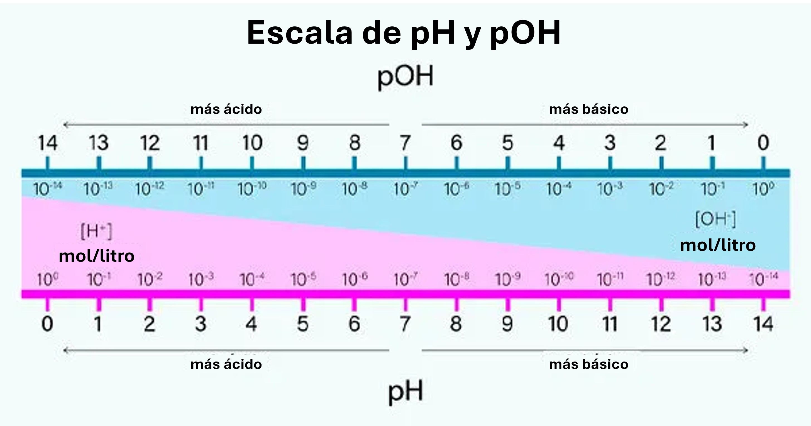
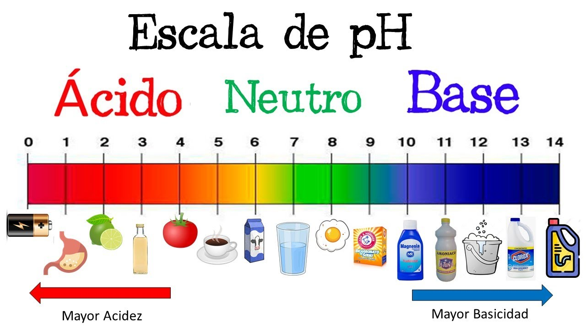
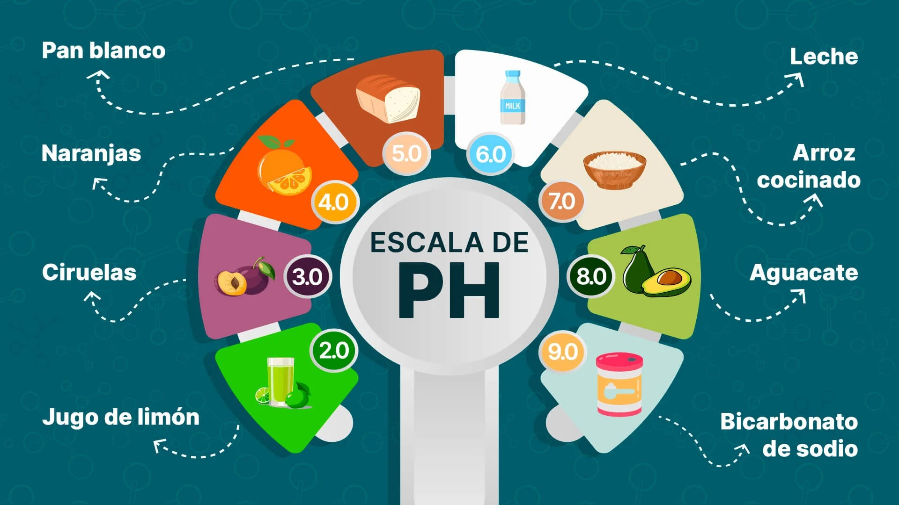
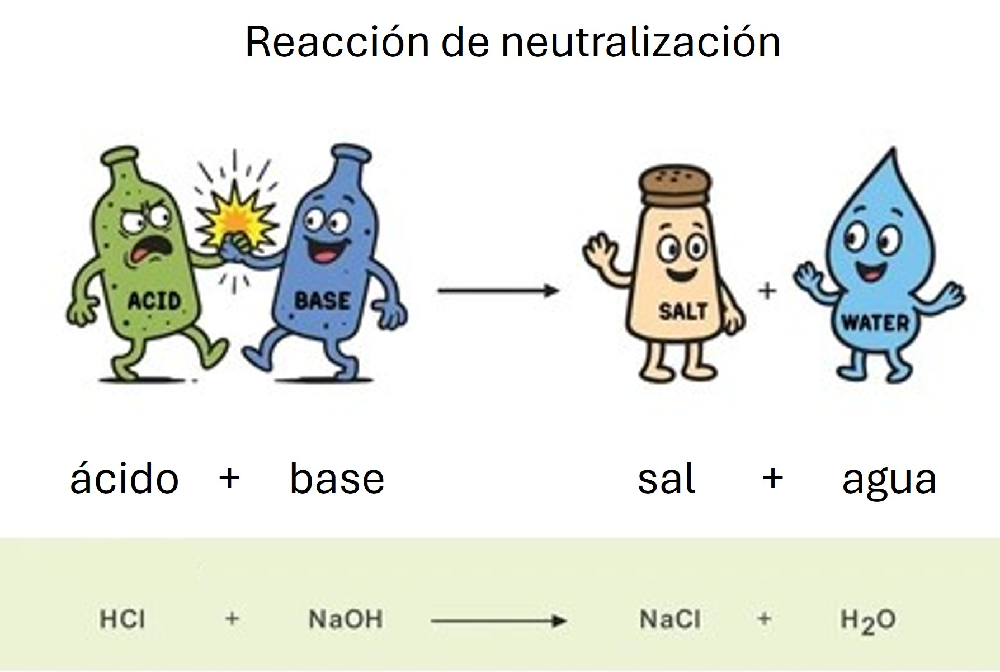

Es una medida que indica qué tan ácida o básica es una sustancia basándose en la concentración del ión H⁺ o H₃O⁺
Fórmula:
pH = -log([H⁺]) o pH = -log([H₃O⁺])
Puntos Clave:
- Ácidos: pH < 7.0
- Neutro: pH = 7.0
- Bases: pH > 7.0
- Relación: pH + pOH = 14
Facultad de Ciencias
Una decisión de pH puede costar US$ 2 millones

EPA - Contaminación por metales pesados

PTAR inconclusa - pH: 9.2-9.6 (Norma: 6.5-9.0)
Es una medida que indica qué tan ácida o básica es una sustancia basándose en la concentración del ión H⁺ o H₃O⁺
pH = -log([H⁺]) o pH = -log([H₃O⁺])

Escala de pH y sus aplicaciones
| Tipo | Ácidos Inorgánicos | Ácidos Orgánicos | Bases Inorgánicas | Bases Orgánicas |
|---|---|---|---|---|
| Fuertes | HCl, HNO₃, H₂SO₄ | - | NaOH, KOH | - |
| Débiles | HClO | Acético, Cítrico, Ascórbico | NH₃ | Etilamina |


Ácido + Base → Sal + Agua
HCl + NaOH → NaCl + H₂O

Haz clic en las tarjetas para revelar la respuesta
Haz clic para ver la respuesta
Es una medida que indica qué tan ácida o básica es una sustancia, basada en la concentración de iones H⁺ o H₃O⁺
pH = -log([H⁺])
Haz clic para ver la respuesta
pH + pOH = 14
A 25°C, esta relación siempre se cumple en soluciones acuosas
Haz clic para ver ejemplos
Inorgánicos: HCl, HNO₃, H₂SO₄
Se disocian completamente en agua
Haz clic para ver ejemplos
Inorgánicos: NaOH, KOH, Ca(OH)₂
Se disocian completamente en agua liberando OH⁻
Haz clic para ver la ecuación
Ácido + Base → Sal + Agua
Ej: HCl + NaOH → NaCl + H₂O
Haz clic para ver rangos
Yogur: 4.0-4.6
Quesos: 4.1-5.9
Vinos: 3.2-5.5
Haz clic para ver el rango óptimo
Rango óptimo: 6.0 - 7.0
Permite mejor absorción de nutrientes
Haz clic para ver el valor
pH normal: 7.4
Rango vital: 7.35 - 7.45
Pon a prueba tus conocimientos
Este quiz contiene 10 preguntas sobre pH y ácido-base